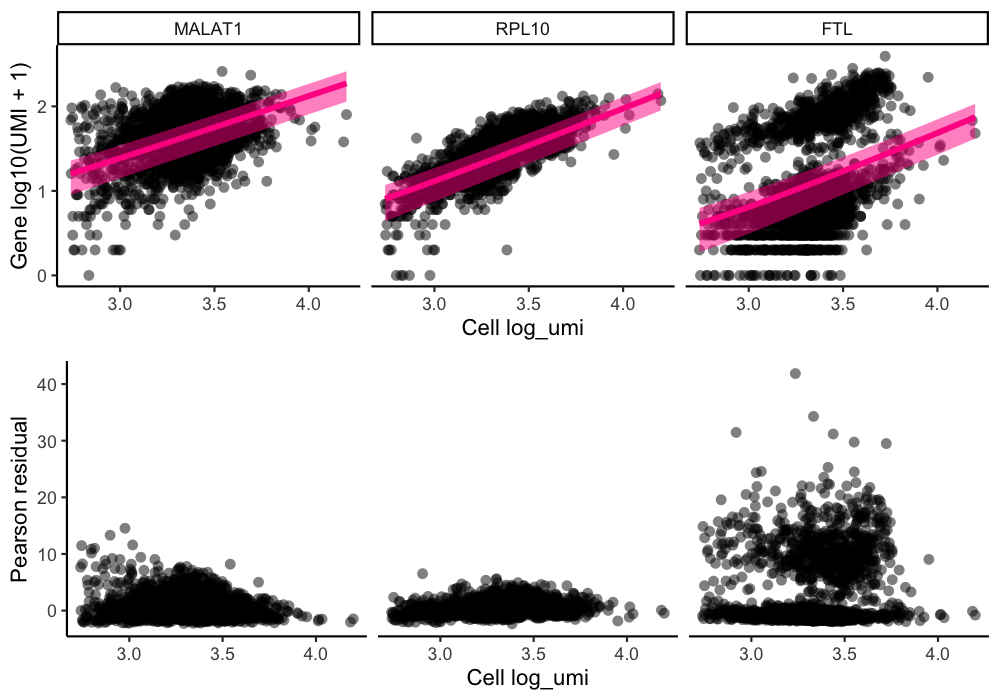
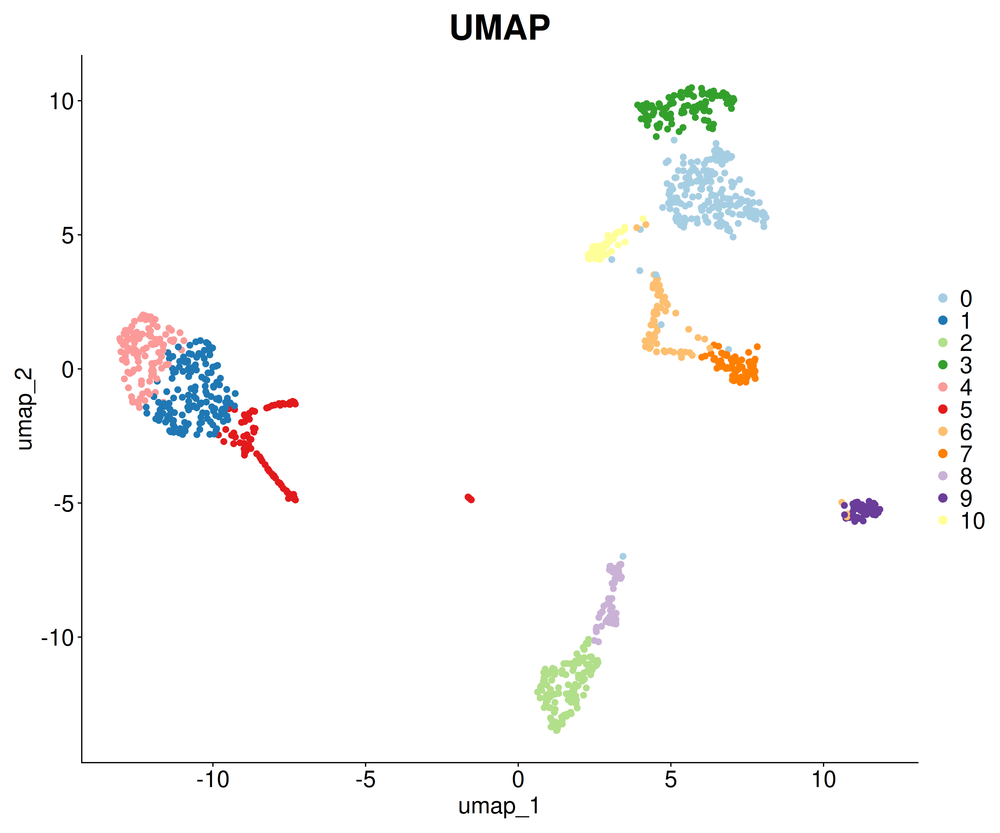
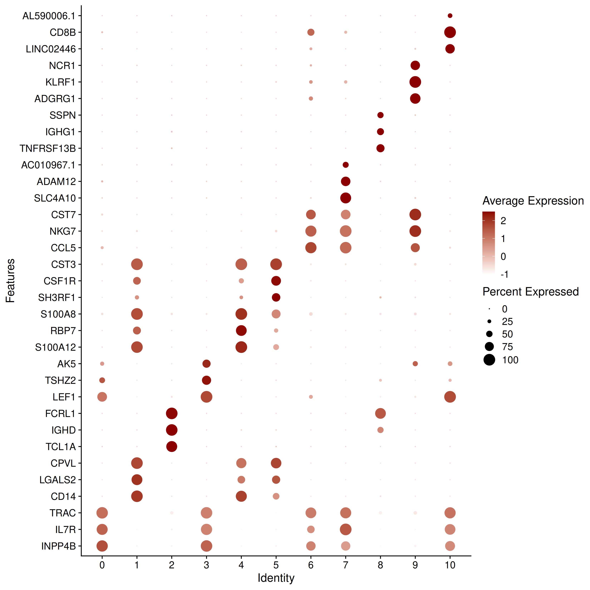
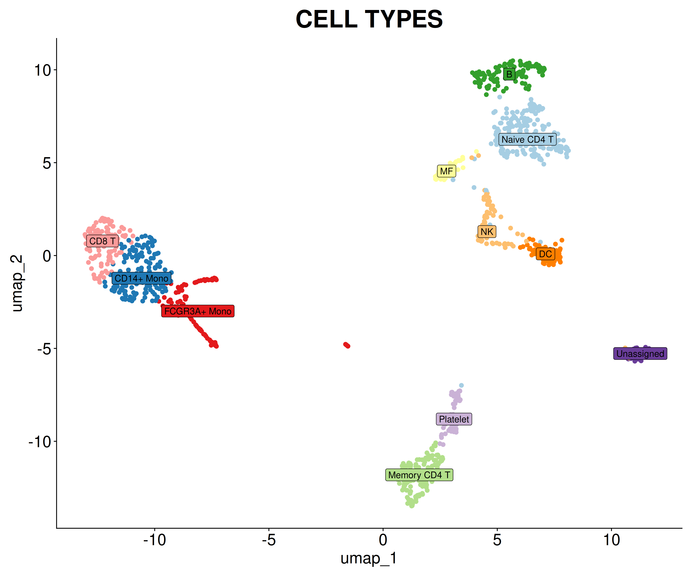
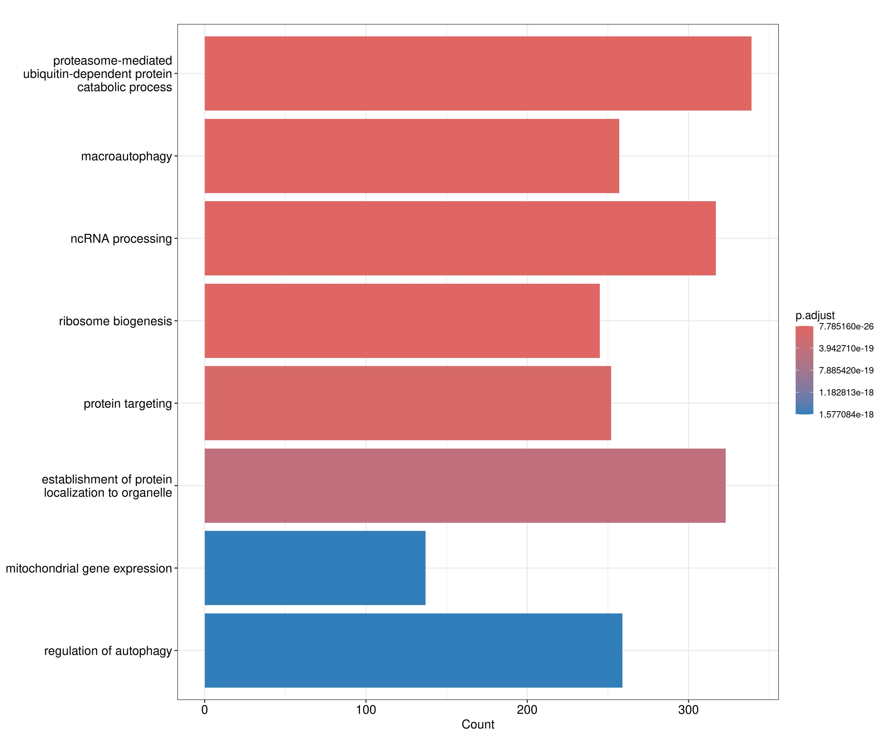
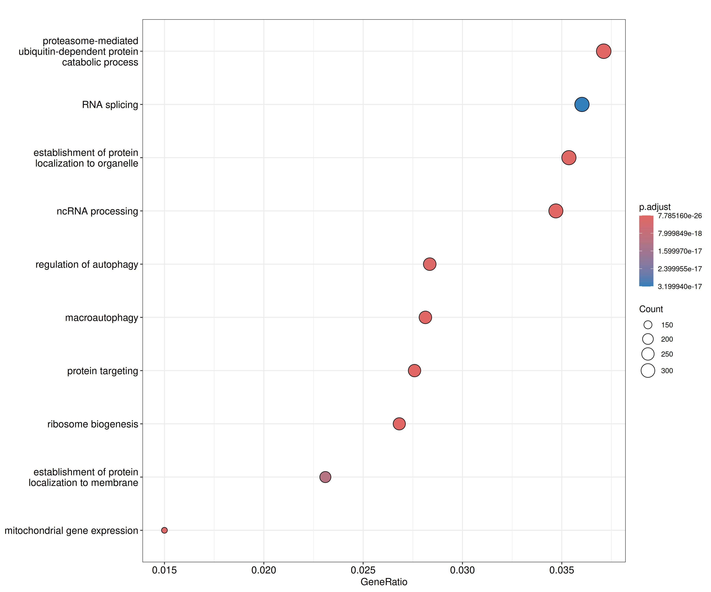
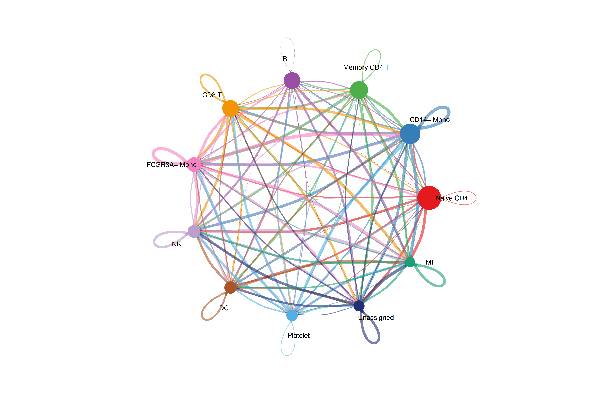

Raw sequencing data (FASTQ files) is assessed for quality using tools like FastQC and MultiQC. This step detects issues such as adapter contamination, low-quality reads, or GC bias before continuing with further analysis.
Step 2: Trimming
Trimming removes adapter sequences and low-quality bases from reads. Tools like Trimmomatic or fastp ensure that only high-quality sequences are kept, improving mapping efficiency and accuracy.
Step 3: Alignment & Quantification
Reads are aligned to the reference genome using specialized software. Barcodes and UMIs are identified and deduplicated in order to quantify the gene expression as well as identify poor quality cells
and duplicates. The results are saved in the raw counts matrix in which each column represents the transcriptomic profile of a single cell.
In most projects, this step is performed using a specialized technology-based pipeline (eg. cellRanger) or with an in-house workflow depending on the project necesities
Data is processed using Seurat and/or Scanpy pipelines for normalization, dimensionality reduction, clustering, and marker discovery.
Step 4.1: Cell QC & Filtering
Quality control (QC) of single cell RNA-seq data is an important step before moving on to downstream analyses and making biological conclusions. The major goals of this step includes generating metrics that help assess the sample quality as well as removing poor quality data and background noise.
Cells are filtered based on the recommended features:
Normalization aims to remove technical differences so they do not interfere with comparisons of the expression profiles between cells.
This ensures that any observed heterogeneity or differential expression within the cell population are driven by biology and not technical biases.
Normalization methods include a wide range of approaches such as library size normalization or normalization by deconvolution. The best method will depend on the characteristics of the project.

Step 4.3: Dimensionality Reduction
In these type of analyses, each individual gene represents a dimension of the data. Expanding this concept, each cell's expression profile defines its location in the high-dimensional expression space.
As the name suggests, dimensionality reduction aims to reduce the number of separate dimensions in the data. This is possible because different genes are correlated if they are affected by the same biological process.
Thus, we do not need to store separate information for individual genes, but can instead compress multiple features into a single dimension. This reduces computational work in downstream analyses; reduces noise and enables effective plotting of the data.
Dimensionality reduction can be perform through different algorithms:
Principal Component Analysis (PCA)
Uniform manifold approximation and projection (UMAP)
t-stochastic neighbor embedding (t-SNE)

Step 4.4: Clustering & Marker Identification
Clustering is an unsupervised learning method that is used to define groups of cells with similar expression profiles within the scRNA-seq data.
Cluster-specific marker genes are identified via differential expression using MAST, Wilcoxon or DESeq2 algorithms.
These marker genes can be used for cluster annotation, in which the clusters can be treated as representations for biological concepts such as cell types.
Clustering will be done thourgh different methods based on the necesities of the project:
Graph based methods (k –neighbours graph): Recommended for large datasets
Density based methods (eg. k-means): Recommended for smaller datasets

Step 5: Cell Type Annotation
The annotation refers to the process of assigning biological identities—such as cell types, subtypes, or functional states—to individual cells or clusters of cells based on their gene expression profiles.
This step is essential for interpreting scRNA-seq data and linking transcriptional heterogeneity to biological function.
Cell identities in scRNA-seq data are inferred under the assumption that:
Cells with similar transcriptional profiles represent the same or closely related biological states.
Known cell types are characterized by reproducible expression of marker genes, transcriptional programs, or gene signatures.
Novel or transitional cell states may deviate from canonical marker patterns.
The main annotation strategy that our faciliy perform is reference-based annotation: Cell identities are assigned by comparing query cells or clusters to previously annotated reference datasets, using similarity metrics or projection methods with software as CellTypist, SingleR or Seurat.
This method is fast and reproducible and also recommended for large datasets and standard tissues

Step 6: Additional analyses
Step 6.1: Differential Expression Analysis
Like other techiniques like bulk RNAseq, differential expression analysis in single-cell RNA sequencing aims to identify genes whose expression levels differ systematically between biological conditions, such as cell types or clusters, experimental conditions, cellular states, etc.
However, compared to bulk RNA-seq, scRNA-seq presents additional complexities like zero inflation and cell-to-cell high heterogeneity. As a result, classical bulk RNA-seq DE methods are not usually suitable for this type of data.
The 2 main approaches are:
Cell-level differential expression: Expression values of individual cells are compared directly between groups (e.g. cluster A vs cluster B), using statiscal analysis like Wilcoxon rank-sum test with tools such as Seurat or Scanpy.
Pseudobulk differential expression: Cells are aggregated per sample and per cell type or cluster, generating a “pseudobulk” count matrix. DE analysis is then performed using bulk RNA-seq methods such as DESeq2 or edgeR
For this type of analysis we will generate the same plots as we do in bulkRNAseq DE
Step 6.2: Enrichment Analysis
Functional enrichment analysis is a downstream analytical step used to interpret differential expression (DE) results by identifying biological functions, pathways, or regulatory programs that are overrepresented in a given gene set.
This way we can give a biological context to those differentially expressed genes (DEGs, pvalue adjusted < 0.05)) obtained through a differential expression analysis.
Over-Representation Analysis (ORA): tests whether genes from a DE list occur more frequently than expected by chance in predefined functional categories such as GO terms or pathways databases.
Gene Set Enrichment Analysis (GSEA): evaluates whether genes from a functional category are enriched at the top or bottom of a ranked gene list.


Step 6.3: Cell-cell Communication Analysis
Cell–cell communication analysis aims to infer intercellular signaling interactions by identifying expression of ligand–receptor pairs across distinct cell populations. The primary goal is to understand how different cell types communicate and influence each other.
Importantly, this analysys infers putative signaling interactions, not direct biochemical evidence. Robust interpretation requires careful cell annotation, integration with complementary analyses, and awareness of methodological limitations.
Once we the cells annotated with the correspondant cell type, the typical workflow for cell-to-cell communication analysis includes:
Definition of sender ((ligand-expressing) and receiver (receptor-expressing) populations.
Selection of ligand–receptor interaction database. The most commonly used are CellPhoneDB and CellChat.
Statistical inference of interactions: Assess whether observed ligand–receptor co-expression between two populations is greater than expected by chance.
Build cell–cell communication networks

Step 6.4: Trajectory Analysis
Trajectory analysis (also referred to as pseudotime analysis) in single-cell RNA sequencing aims to reconstruct dynamic biological processes from static transcriptomic snapshots by ordering cells along a continuous axis that represents progression through a biological process.
Typical applications include cell differentiation, developmental processes and state transitions in disease contexts.
Trajectory analysis is based on the assumption that cells sampled at a single time point represent different stages of an underlying dynamic process and that transcriptional similarity reflects proximity along that process
The process can often be represented as a linear trajectory, a branching structure or a complex graph of cell states. The inferred ordering of cells is referred to as pseudotime, which reflects relative progression, not actual chronological time.
1. Dimensionality reduction: Trajectory methods operate in a low-dimensional representation of the data like PCA or UMAP.
2. Stablishing root cell: Most methods require specification of a starting point, such as a progenitor cell population or a biologically defined early cluster. The root defines the direction of pseudotime.
3. Graph construction and trajectory inference. Cells are connected based on transcriptional similarity to form a graph or manifold, from which trajectories are inferred.
Although there are many possible approaches we usually performs this analysis with the software Monocle3 which is widely used and recommended.